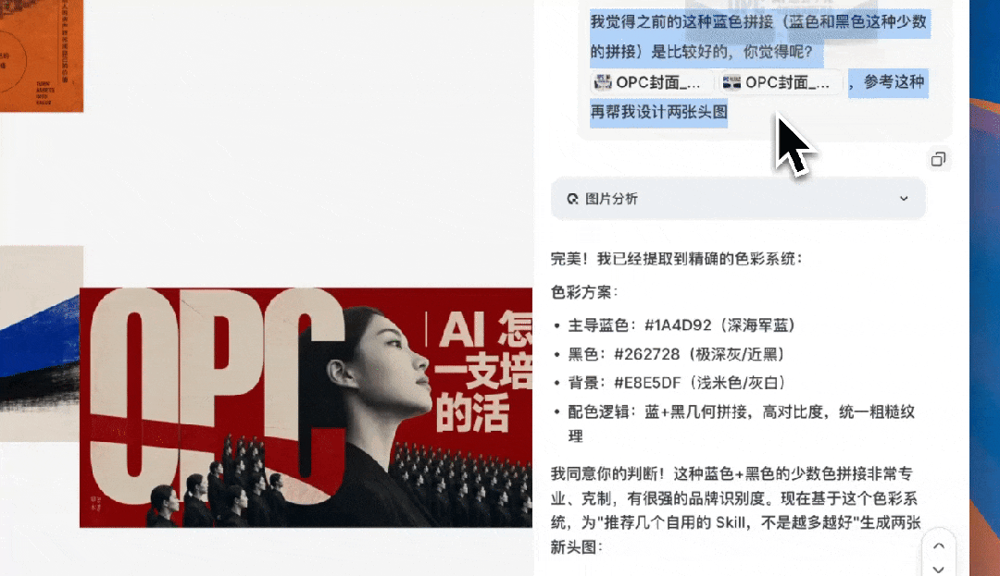

大家好啊，我是甲木，
今天给大家分享一个我日常流程的一个 AI 解决方案，就是 「公众号头图」和「文章信息配图」 。
先给大家看几张图，
— 公众号头图样式1
— 公众号头图样式2
上边是我最近跑出来的公众号头图的设计风格，感觉比我自己设计的 优雅多了 ...
— 文章中的火柴人信息图
这个是很多小伙伴问我 频率最高的问题 ，相信也有很多老粉丝都会发现，我文章里经常会配上上述的信息图。
自媒体这个行业，真正磨人的，除了正文。还有头图，和配图。
正文写完之后，横在最上面那张头图，和正文里几个地方等着配图（为了方便大家理解）.. 内容创作者应该经常会遇到这样情况。
给大家分享一下我的解决方案，先说平台，依旧是老朋友 Lovart ，现在它们还在搞活动，我直接冲了..
— Lovart官网 lovart.ai/zh
公众号的逻辑很简单，也很残酷。
头图决定打开率 。它和标题，是读者点开之前唯一能看到的东西。头图拉胯，正文写得再好也没人点。
配图决定读完率 。一篇三千字的长文，要是从头到尾全是字，读者划两屏就走了。中间得有图，帮他喘口气，帮他把复杂的东西看明白。
这两件事有个共同点： 会做一张容易，稳定、快速地做一百张，难。
我的审美，实话说，还在努力培养中 emmm，所以不如交给 AI，并且 自动化生产线 ，基本上也是靠 Lovart 来救命的。。
过去一年尝试过很多 AI 工具，但 真正长期留在工作流里的产品并不多 。Lovart 绝对算一个。。
平台稳定性 、 模型更新速度 、 设计友好交互 ，太他么适合我了。。之前写过很多次了。
好，接下来先说说头图。
📌 本文看点
01
头图方法论：语义画出来
02
封装成 Skill 一键复用
03
配图自动化，一篇文章进一套图出
METHODOLOGY
头图的方法，不是排版，是把语义画出来
我做头图这套方法，最早是从「@蜡笔进化论」号的书籍封面设计 prompt 上得到的启发。我在它的基础上， 针对微信公众号做了一轮改造和适配 ：比例换成头图的 21:9、加上安全区、锁死我自己的品牌色、把中文标题的处理重写了一遍。
「一张好头图，要让人先感受到这篇文章，而不是先看到设计。」
很多人做图是反的。先排版、先找字体、先挑配色，做完发现画面挺好看，可 跟文章没关系，换个标题照样能用 。那就等于没设计。
所以通过几步来约束它，并根据 Image 2 本身的能力进行泛化，效果非常好，prompt 类似下述：
这套我用了很久，效果很好。而且既然是方法论这种东西，就 最适合交给 Agent 去记 。
SKILL BUILDING
把头图方法封装成第一个 Skill
现在各家 Agent 基本上都支持 Skill 化， 凡是重复的工作，全部把它封装成 Skill 。。
Lovart 有个功能叫 Create Skill 。一句话说，就是 把你的一整套工作流，沉淀成一个能反复调用的技能 。
新建一个项目，打开「Thinking Mode」模式，把上面那四步原原本本讲给它听。语义怎么锁、构图禁止哪些套路、文字怎么参与结构、配色锁死、最后那道反套路校验不能省。
💡 注意，只有思考模式下才支持创建 skill
ChatCanvas 的体验也顺。它不是聊天框里甩张图完事，是 一块画布 。哪里不对我直接在上面说，这块压暗点、那个字往左挪，改的过程看得见。
等调整完了确认没问题之后，直接点开「技能」「基于对话创建」「保存到自己的 skill 库」
看下过程：
素材

封装完，我手里多了个叫 「编辑视觉隐喻」 的 Skill。
做头图这件事，从 手工活变成了调用 。再次打开新窗口的时候，就能直接参考对话框预填的 Preset Prompt 开始复用！
— 点击即用
然后直接生成开头的头图，
顺手再补一步，给标题造字。
头图的灵魂是标题那几个字，可显示字体就那么几套，你用思源我也用思源，做出来自然像一个模子。
Lovart 的 Font Generator 一句话就能生成一套 专属字体 。我跟它说要高对比的黑体变形、笔画粗细拉大、转角硬朗、有大标题的压迫感，它真给我造了一套。
— 设计字体之前的截图
落到 21:9 的大横幅上，笔画干净、结构稳，直接能用，不用回 PS 描边。
现在基本上我写完文章，直接用对着 「编辑视觉隐喻」 Skill 填上内容，它走 Image 2 出图，统一 21:9。
头图这条线通了。该说配图了， 这才是这次我最想分享的 。
AUTO ILLUSTRATION
配图：上传一篇文章，自动配一套火柴人信息图
长文配图，是比头图更烦的活。
十几个地方要配图，一张张想、一张张做，做完还得风格统一。我以前一篇长文的配图， 能耗掉小半天 。
我自己有套固定的配图风格： 火柴人信息图 。简笔的小火柴人，加上信息结构，加上中文标注，把一段抽象的道理画成一眼能看懂的图。读者翻到这种图会停一下， 长文的呼吸感就出来了 。
再给大家分享一下 prompt：
问题还是那个： 风格好定，量产难 。
这次我把它也封装成了第二个 Skill，叫 「专家白板信息图设计」 。
但它的用法跟头图 Skill 不一样，更狠一点：
「我直接把整篇文章丢给它。」
它会自己读完，理解每一段在讲什么，判断哪里该配图，然后在该配的地方，生成一张火柴人信息图。 一篇文章进去，一套风格统一的配图出来 。
— 拿藏师傅的 skills 方法论为例
我拿了藏师傅的 skill 真实文章喂进去，比例统一 16:9，正好嵌在公众号正文里。
出来的一整套图，火柴人的 造型、配色、标注字体，全程一致 。
这点很关键，配图最怕的就是十张图十个样，读者一看就出戏。
素材
火柴人 skill 录屏视频
Image 2 一次出多张还能 保持风格统一 ，这套配图基本不用我返工。
信息图里的中文标注也准。火柴人旁边那些小字、流程框里的词，都没什么问题。
两条产线一开，我一篇长文从头图到配图的出图时间， 从大半天压到 10 分钟 。
头图和配图都跑通了，Lovart 还把后面交付的路也铺平了。
之前给大家介绍过的 Brand Kit 品牌套件，一键能够创建自己的品牌信息，还记得我们的山海咖啡么~
老粉应该记得，之前我用 Nano Banana Pro 做过一个「山海咖啡」的茶饮品牌案例，效果已经很惊艳了。
而这次换上 Image 2，直接起飞。
直接上传过往素材，自动解析生成品牌套件，之后再进行应用的时候就可以直接获取该品牌的所有元素。
一句话输入品牌调性，Skills + Image 2 + Brand Kit 联合工作，Logo、包装设计、产品海报、周边效果图一气呵成。
这个「Brand Kit」对应到龙虾中，就是「记忆」，关于你品牌的所有记忆，有了品牌资产，之后的产品营销材料、数字内容、品牌应用等等，都可以一个人，在几分钟内就可以完成。
除了这样之外，还有分层导出 PSD，都非常适合设计师使用。
品牌搭建、创意生成、配图、修改、交付， 一条龙在一个地方走完 。
EPILOGUE
结语
过去一年，AI 工具我试得不少。 真正留在工作流里、每天还开的，没几个 。
很多工具、中转站，热闹一阵图便宜买了就没声了。直接跑路了贼他么坑。。
对一个要长期产出内容的人， 稳定比什么都重要 。Lovart 一直在更新、一直在加新能力，目前用着还是很踏实的。
现在还在年中大促，也是目前已确定的全年最低价格窗口，最低可享 43 折优惠。续了年费，还是非常划算的，根据自己的需求选档位~
「不管是什么工作，真正决定你能跑多久的，是你能不能把「会做」这件事，变成一条随时能调用的 AI 产线。」
头图和配图，我的两条产线都建在了 Lovart 里。你也可以建自己的。
官网再放一次： lovart.ai/zh

我是甲木，热衷于分享一些 AI 观察，AI 干货内容
如果你觉得今天这篇有收获，欢迎 点赞、在看、转发 三连，我们下篇见